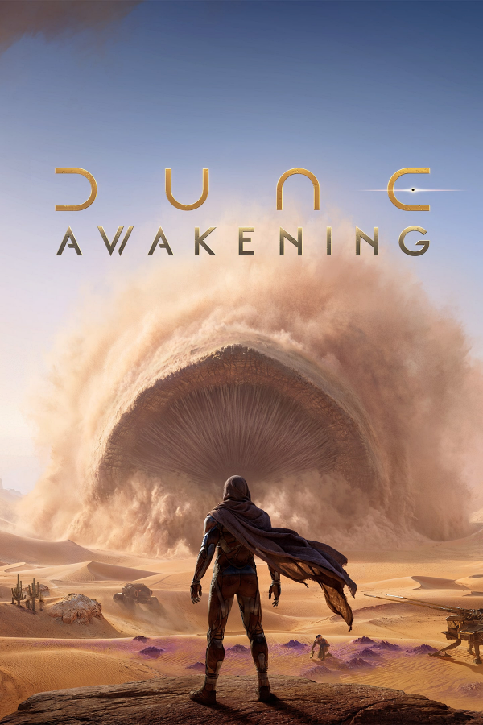

Dune: Awakening
Every archived year-end list appearance, including placement and points earned.
About the Game
Dune: Awakening combines the grittiness and creativity of survival games with the social interactivity of large-scale, persistent multiplayer games to create a unique and ambitious Open World Survival MMO. Rise from survival to dominance in a vast and seamless Arrakis shared by thousands of players. Survive the most dangerous planet in the universe. Build shelters against sandstorms, maintain your stillsuit, and master the old ways to walk even the deepest deserts. Avoid or be devoured by the colossal sandworms that dwell beneath the sands. Explore the ever-changing face of Arrakis. Walk the ruins of long-forgotten biological testing stations, scavenge the wreckage of fallen spaceships, and wander the dusty halls of abandoned sietches. Head into unmapped sectors and be the first to discover secrets and riches before the coriolis storms once again shift the sands and alter the landscape. Control the spice, control Arrakis. Hunt for spice blooms and deploy your harvester, then protect it from opportunistic raiders and rival factions. Soak the sand in blood as massive battles shift seamlessly from foot to vehicles and from ground to ornithopters in the sky. Make plans within plans. Make a name for yourself among the inhabitants of Arrakis. Wield intrigue and force to influence the Landsraad and impact the world. Build your own faction through spice harvesting, trade, subterfuge, and open conflict. Awaken the sleeper. Tailor every aspect of your character. Consume spice to conquer your senses and acquire powerful abilities. Hone your craft to become sought out for the finest creations. Construct your fortress in the style of your choosing. The journey is yours to shape.
| Released | 2025-06-10 |
|---|---|
| Developer | Funcom |
| Publisher | Funcom |
| Genres | Action, Adventure, RPG, Massively Multiplayer |
| Platforms | PC, Xbox Series S/X, PlayStation 5 |
Steam AchievementsMultiplayerFull controller supportSteam CloudRPGCo-opOpen WorldThird PersonSci-fiOnline Co-OpExplorationSandbox
Where to Buy
Game information provided by RAWG.
Points by Year
List History
| Year | Source | List | Placement | Points |
|---|---|---|---|---|
| 2025 | Empire | The Best Games Of 2025 As Ranked By Empire Magazine | 16 | 3 |
| 2025 | FullCleared | FullCleared's Favorite Games of 2025 | 15 | 3 |
| 2025 | Geeky Brummie | Top 50 Most Notable Games of 2025 | 41 | 1 |
| 2025 | NPR | The best games of 2025, picked by NPR's staff | Unranked | 1 |